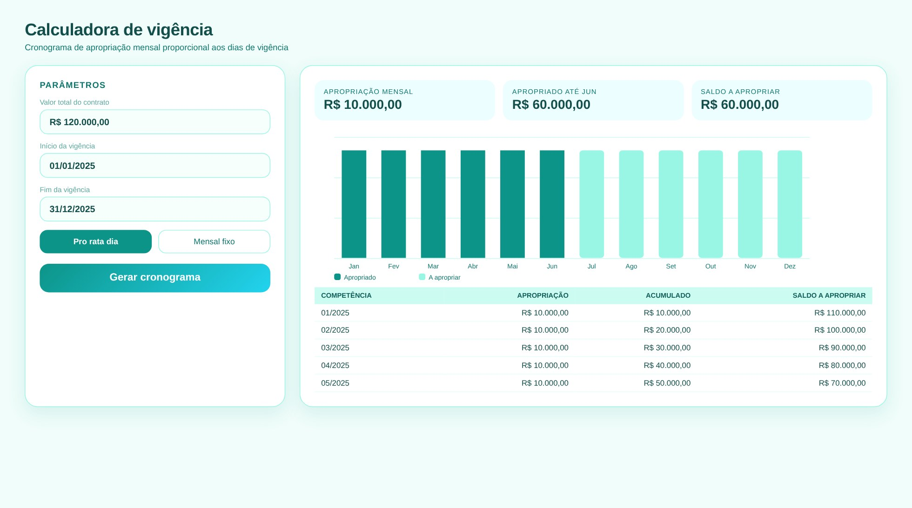
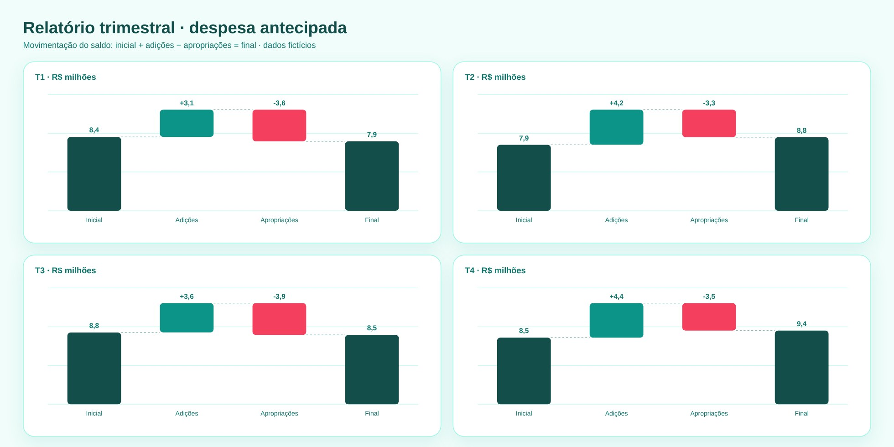

Calculadora + Gantt
Despesa Antecipada: Conciliação, Vigência e Relatório Trimestral
Três ferramentas para controlar a apropriação de despesas pagas antecipadamente.
Controles e conciliaçõesConciliação de Despesa AntecipadaCalculadora de VigênciaRelatório de Despesa Antecipada Trimestral



Tela de demonstração com dados fictícios